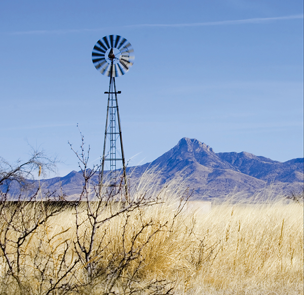
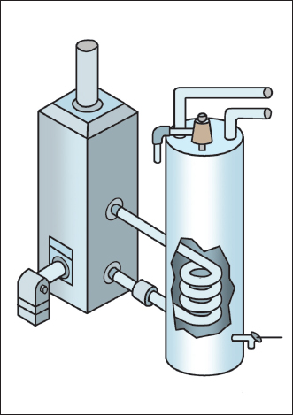
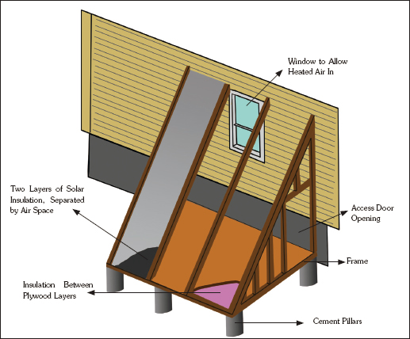
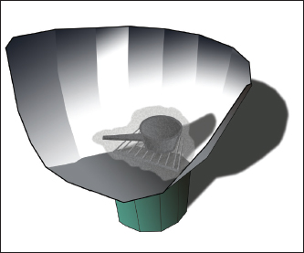
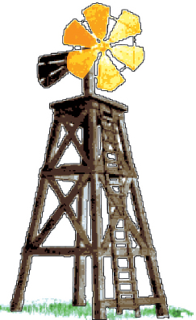
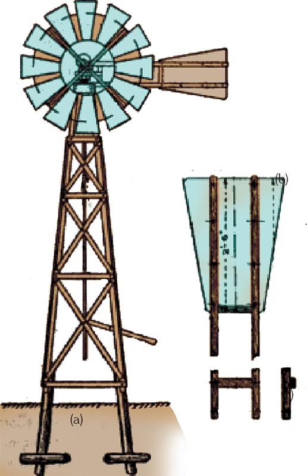
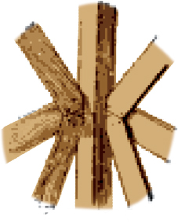
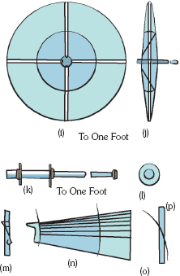
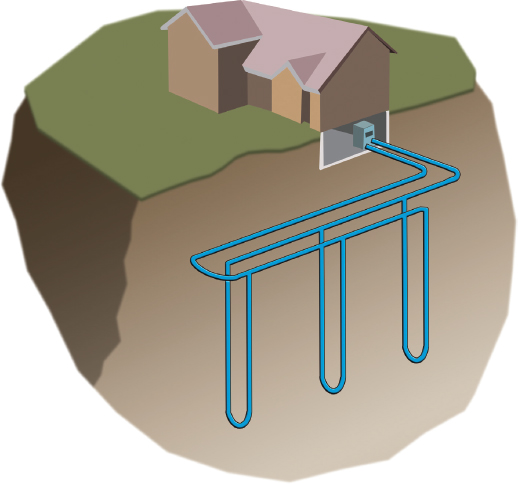
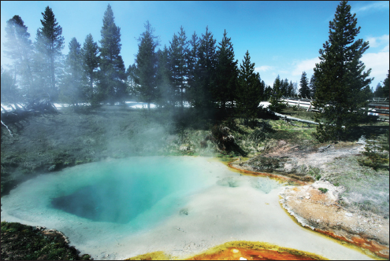

Alternative Energy

Installing a Passive Solar Space Heater
Make Your Own Solar Cooking Oven
Selecting and Installing a Geothermal Heat Pump System in Your Home
Solar thermal (heat) energy is used most often for heating swimming pools, heating water to be used in homes, and heating specific spaces in buildings. Solar space heating systems are either passive or active.
Passive Solar Space Heating
Passive space heating is what happens in a car on a sunny summer day—the car gets hot inside. In buildings, air is circulated past a solar heat surface and through the building by convection—less dense, warm air tends to rise while the denser, cooler air moves downward. No mechanical equipment is needed for passive solar heating.
Passive solar space heating takes advantage of the warmth from the sun through design features, such as large, south-facing windows and materials in the floors and/or walls that absorb warmth during the day and release it at night when the heat is needed most. Sunspaces and greenhouses are good examples of passive systems for solar space heating.
Passive solar systems usually have one of these designs:
1. Direct gain—This is the simplest system. It stores and slowly releases heat energy collected from the sun shining directly into the building and warming up the materials (tile or concrete). It is important to make sure the space does not become overheated.
2. Indirect gain—This is similar to direct gain in that it uses materials to hold, store, and release heat. This material is generally located between the sun and the living space, usually in the wall.
3. Isolated gain—This collects solar energy separately from the primary living area (a sunroom attached to a house can collect warmer air that flows through the rest of the house).
Active Solar Space Heating
Active heating systems require a collector to absorb the solar radiation. Fans or pumps are used to circulate the heated air or the heat-absorbing fluid. These systems often include some type of energy storage system.
There are two basic types of active solar heating systems. These are categorized based on the type of fluid (liquid or air) that is heated in the energy collectors. The collector is the device in which the fluid is heated by the sun. Liquid-based systems heat water or an antifreeze solution in a hydronic collector. Air-based systems heat air in an air collector. Both of these systems collect and absorb solar radiation, transferring solar heat to the interior space or to a storage system, where the heat is then distributed. If the system cannot provide adequate heating, an auxiliary or backup system provides additional heat.
Liquid systems are used more often when storage is included and are well suited for radiant heating systems, boilers with hot water radiators, and absorption heat pumps and coolers. Both liquid and air systems can adequately supplement forced air systems.
Active solar space heating systems are comprised of collectors that absorb solar radiation combined with electric fans or pumps to distribute the solar heat. These systems also have an energy-storage system that provides heat when the sun is not shining.
Another type of active solar space heating system, the medium temperature solar collector, is generally used for solar space heating. These systems operate in much the same way as indirect solar water heating systems but have a larger collector area, larger storage units, and much more complex control systems. They are usually configured to provide solar water heating and can provide between 30 and 70 percent of residential heating requirements. All active solar space heating systems require more sophisticated design, installation, and maintenance techniques than passive systems.
Passive Solar Water Heaters
Passive solar water heaters rely on gravity and on water’s natural tendency to circulate as it is heated. Since these heaters contain no electrical components, passive systems are more reliable, easier to maintain, and work longer than active systems. Two popular types of passive systems are:
1. Integral-collector storage systems—These consist of one or more storage tanks that are placed in an insulated box with a glazed side facing the sun. The solar collectors are best suited for areas where temperatures do not often fall below freezing. They work well in households with significant daytime and evening hot-water needs but they do not work as efficiently in households with only morning hot-water draws as they lose most of the collected energy overnight.
2. Thermospyhon systems—These are an economical and reliable choice particularly in newer homes. These systems rely on natural convection of warm water rising to circulate the water through the collectors and into the tank. As water in the collector heats, it becomes lighter and rises to the tank above it and the cooler water flows down the pipes to the bottom of the collector. In freeze-prone climates, indirect thermosyphons (using glycol fluid in the collector loop) can be installed only if the piping is protected.

A combination of an indirect water heater and a highly efficient boiler can provide a very inexpensive method of water heating.
Active Solar Water Heaters
Active solar water heaters rely on electric pumps and controllers to circulate the water (or other heat-transfer fluids). Two types of active solar water heating systems are:
1. Direct circulation systems—These use pumps to circulate pressurized potable water directly through the collectors. These systems are most appropriate for areas that do not have long freezes or hard/acidic water.
2. Indirect circulation systems—These pumps heat transfer fluids through the collectors. These heat exchangers then transfer the heat from the fluid to potable water. Some of these indirect circulation systems have overheat protectors so the collector and glycol fluid do not become superheated. Common indirect systems include antifreeze, in which the heat transfer fluid is usually a glycol-water mixture, and drainback, in which pumps circulate the water through the collectors and then the water in the collector loop drains back into a reservoir tank when the pump stops.
Installing a Passive Solar Space Heater
A passive solar space heater works when the sun shines through the solar panels to heat the air inside a box. As the air heats up in the box, it rises and moves into the house. Cool air moves into the box and out of the house—in this way, the house is heated without the use of a mechanized heating system. Using a passive solar heater works best if you have a house that faces south and has both basement and first floor windows on that side of the house. If your house meets these requirements (and there aren’t too many obstructions that would impede the sun from shining on the heater), then you can begin construction.
The passive solar space heater is made up of a floor and two triangular end walls, all of which can be made simply out of plywood. In between the open space, insulation can be placed. A lid can also be added to cover the heater in the summer.
To build such a solar space heater, first decide where on the southern wall your collector will be located. If you can place the heater in between windows, that is the best option. You may need to cut through the wall near a window to allow for the proper ventilation but if you don’t want to do this, you can also purchase a detachable plywood “chimney” to move the heated air into the house. Next, find the studs that will support the fiberglass panel and find a panel that will be of the appropriate size.

A passive solar space heater.
Next, make the base for your solar heating system. The base can be made of ⅜ -inch plywood board. Nail the board to a 2 x 4 and level it. Next, add insulation (the kind found on rolls is best), nailing it to the plywood. Then, nail the whole board to the side of the house. Make sloping supports out of 2 x 4s. Make sure the end wall studding is nailed in, and then attach the outside panel to it.
Under the shingles, install flashing or something else that will keep water out of the top of the solar heater. Then, install the fiberglass panels, making sure the edges are caulked so no water can come in. Enclose the edges of the fiberglass with small strips of plywood. Then, install the outer fiberglass panel so that it is flush with the top surface and caulk it. To finish up, paint the inside of the plywood surfaces black to absorb the heat. The inside of the cover panel should be painted white to reflect the light.
Make Your Own Solar Cooking Oven
This type of simple, portable solar oven is perfect for camping trips or if you want to do an outdoor barbeque with additional cooked foods in the summer. This homemade solar oven can reach around 350ºF when placed in direct sunlight.
Supplies
• A reflective car sunshade or any sturdy but flexible material (such as cardboard) covered with tin foil and cut to the notched shape of a car sunshade
• Velcro
• A bucket
• A cooking pot
• A wire grill
• A baking bag

A simple solar oven.
Solar ovens can be fashioned in a variety of ways. The goal is to have as much surface area as possible reflecting the sun toward your food.
Directions
1. Place the car sunshade on the ground. Cut the Velcro into three separate pieces and stick on half of each piece onto the edge near the notch. Then, test the shade to see if the Velcro pieces, when brought together, form a funnel. Place the funnel atop the bucket.
2. Place the cooking pot on the wire grill. Put this all in the baking bag and put it inside the funnel. The rack should now be lying on top of the bucket. Now place the whole cooker in direct sunlight and angle the funnel in the direction of the sun. Adjust the angle as the sun moves.
Windmills
Windmills are used for pumping water, milling, and operating light machinery all around the world. They are constructed in a variety of shapes and some are quite picturesque. When set up properly, windmills cost nothing to operate and if the wheel is made well, it will last for many years without need for major repairs. To make a windmill requires a good understanding of carpentry and workmanship but it is not incredibly difficult or expensive to do.
Constructing a Windmill
Windmills can be of all sizes, though the larger the windmill, the more power it can generate. This windmill and tower can be easily constructed out of wood, an old wheel, and a few iron fittings you may be able to find at a hardware store or home center. Constructing the windmill in sections is the easiest way to create this structure. Simply follow these directions to make your own energy-producing windmill:
The Tower (Fig. 2)
1. The tower is the first part to be built and should be constructed out of four spruce sticks that are 16 feet long and 4 inches square, in a configuration that measures 30 inches square at the top and 72 inches square at the base.

2. The deck should be 36 inches square and should project 2 inches over the top rails.
3. The rails and cross braces can be spruce or pine strips and should measure 4 inches wide and ⅞ inch thick. Attach these to the corner posts with steel-wire nails.
4. Embed the corner posts 2 feet into the ground, leaving 14 feet above the surface. The rail at the bottom, which is attached to the four posts, should measure 3 feet above the ground. Midway between this and the top rail of the deck, run a middle rail around the post. Make sure that where your wheel will be attached, this point rises at least 2 feet above any obstructions (buildings, trees, etc.) so it can have access to the blowing wind.
5. The cross braces should be beveled at the ends so they fit snugly against the corner.
6. The posts, rails, and braces should be planed so they present a nice appearance at the end of the building. A ladder can also be constructed at one side of the tower to allow easy access to the mill.
7. Nail a board across two of the rails halfway up the tower. Secure the lower end of a trunk tightly here if you are constructing a pumping mill. However, if a wooden mill is what you are after, you can use an old wheel from a wagon and six blades of wood.

Details of the windmill. Figure (a) shows a general view with the tail turned to “off” position. Figure (b) shows details of the tail, and (c) shows a cross-piece of the tail.
The Turntable
1. The turntable holds the wheel and tail. It should be built of 2½ x 2-inch timber and 2-inch galvanized wrought iron “water” tube and flanges.
2. The upper flange supports the timber framing. It should be countersunk, using a half-round file, and screwed tightly onto the tube as far as possible. The end of the tube should project just slightly beyond the face of the flange so that it can be riveted over to fill the countersink.
3. Bolt the two loose flanges to the framework of the tower. Use them with 2-inch pipe with the thread filed away so they may slide freely onto the tube. The upper loose flange should form a footstep bearing and the lower flange a guide for the turntable.
4. Now mount the turntable on the ball bearing to make sure the mill head can turn freely. Screw on two back nuts to guard against any possibility of the turntable being lifted out of place by a strong wind.

Beveled cross braces fit snugly against the corners.
The windmill turntable holds the wheel and tail. The head carries the wheel spindle.
The Head
1. This is the part that will carry the wheel spindle.
2. Notch the joints and secure them with 2-inch bolts.
3. The upright, which carries a bolt or pin for the spur-wheel to revolve upon, is kept in place in the front and at the sides by a piece of hoop iron.
4. The tail vane swivel is a piece of 5-inch bore tube with back nuts and washers. Pass an iron bolt or other piece of iron through this, screw it to each end, and fit it with four nuts and washers.
The Wheel Shaft
1. Use wrought-iron tubing and flanges to create the wheel shaft. The bore of the tube is at least 5 inches, and the outside diameter should be roughly 1½ inches. Both the tube and the fittings should be of good quality and a thick gauge (steam quality is preferred).
2. If lathe is available, lightly skim it over the tubing. However, if it’s not, a careful filing will do just as well to smooth down the edges.
3. Screw the tube higher up on one end to receive the flanges forming the hub. Screw these on and secure them on one side with back nuts and on the other with a distance piece made out of a 1½-inch bore tube. Fit a cap to close the open front end of the tube.
4. Grease two plummer blocks with some form of lubrication. These will be the bearings for the shaft.
5. A pinion is needed of at least 2½ inches in diameter at the pitch circle. Bore it to fit the wheel shaft. A spur wheel of 7 inches in diameter should follow that (gear wheels from a lawn mower can be used if available).
The Wheel
1. The wheel should be at least 5 feet in diameter to produce a good amount of energy. The framing consists of an inner and outer ring and four double arms with cross stays and diagonals (a regular wooden wheel will be sufficient, or you can find one made of galvanized steel).
2. Cut each spoke at an angle on one side so that the blades will have the necessary pitch to make the wind turn them.
3. The blades should be 18 inches long, 12 inches wide at the outer ends, and 6 inches wide next to the hub. Each blade should be only ¾ inch thick. Attach them to the spokes with simple screws.
4. If you desire, you can string a wire between the outer end of each blade to the end of the next spoke. This will help steady the blades.
The Tail
1. Run a fine saw cut up about 2 feet, 6 inches from the outer end to receive the vane (optional).
2. Pass a cord over two pulleys and down the turntable tube. It is necessary to attach the end of the cord to a short cylinder of hard wood or metal (about 2 to 3 inches in diameter). This revolves with the turntable but can be slid up or down.
3. If you plan on using a pump, it is important to cut a hole through the axis of the cylinder to fit the pump rod.
4. Cut a groove in the circumference of the cylinder, and bend two pieces of iron into shape and place them into the grooves. Now take the cords from the two bolts, untying the straps. Join these two cords to another cord, which acts as a reel or lever at the base of the tower. In this way, the position of the tail can be regulated from a stationary point.
Adding Pumps to Your Windmill
If you want to use this windmill to pump water, then you may need to do some experimenting with different lengths of pump stroke. Below is a table indicating what should be expected from the pump, and also providing the size of the single-action pump suitable for a given lift (using a ratio of 1 to 3).

Details of the wheel shaft frame (i, j); front and side views, (k, l); axle of wheel (m); attachment of inner end of vane to inner ring of frame (n); vane on rings (o); attachment of vane to outer brackets by bracket (p).
Each spoke should be cut at an angle so that the blades will have the pitch to make the wind turn them.
Make sure that your pump is not too large; otherwise, it may not start in a light wind or breeze.
The pump is driven by a pin screwed into the side of the spur wheel and is secured with a lock nut. Drill and tap three or four holes at different distances from the center of the wheel so the length of the stroke can be adjusted. If the spokes on the wheel are too thin for drilling, you can use a clamp with a projecting pin instead.
A pump rod—a continuous wooden rod about 1 inch square and thicker at the top end—can be used in connecting the bottom end (by bolting) to the “bow” supplied with the pump. Intermediate joints, if needed, can be fashioned with 1 x ½-inch fish plates roughly 6 inches long. If the pump is no more than 12 feet below the crank pin, one guide will be adequate. The pump rod must be able to revolve with the head and will be need to be thickened up in a circular section where it passes through the guide. Make the guide in two halves and screw or bolt it to a bar running across the tower.
Final Touches
When construction is finished, paint all of the woodwork any color that complements your yard or property and, if desired, lacquer it to protect the wood from rain and snow. A windmill of this size will create at least a one quarter horsepower in a 15 mph wind.
Selecting and Installing a Geothermal Heat Pump System in Your Home
The heating efficiency of commercial ground-source and water-source heat pumps is indicated by their coefficient of performance (COP)—the ratio of heat provided in Btu per Btu of energy input. The cooling efficiency is measured by the energy efficiency ratio (EER)—the ratio of heat removed to the electricity required (in watts) to run the unit. Many geothermal heat pump systems are approved by the U.S. Department of Energy as being energy efficient products and so, if you are thinking of purchasing and installing this type of system, you may want to check to see if there is any special financing or incentives for purchasing energy efficient systems.
Evaluating Your Site
Before installing a geothermal heat pump, consider the site that will house the system. The presence of hot geothermal fluid containing low mineral and gas content, shallow aquifers for producing the fluid, space availability on your property, proximity to existing transmission lines, and availability of make-up water for evaporative cooling are all factors that will determine if your site is good for geothermal electric development. As a rule of thumb, geothermal fluid temperature should be no less than 300ºF.
In the western United States, Alaska, and Hawaii, hydrothermal resources (reservoirs of steam or hot water) are more readily available than the rest of the country. However, this does not mean that geothermal heat cannot be used throughout the country. Shallow ground temperatures are relatively constant throughout the United States and this means that energy can be tapped almost anywhere in the country by using geothermal heat pumps and direct-use systems.
To determine the best type of ground loop systems for your site, you must assess the geological, hydrological, and spatial characteristics of your land in order to choose the best, most effective heat pump system to heat and cool your home:

A vertical closed-loop geothermal system
1. Geology—This includes the soil and rock composition and properties on your site. These can affect the transfer rates of heat in your particular system. If you have soil with good heat transfer properties, your system will require less piping to obtain a good amount of heat from the soil. Furthermore, the amount of soil that is available also contributes to which system you will choose. For example, areas that have hard rock or shallow soil will most likely benefit from a vertical heat pump system instead of a system requiring large and deep trenches, such as the horizontal heat pump system.
2. Hydrology—This refers to the availability of ground or surface water, which will affect the type of system to be installed. Factors such as depth, volume, and water quality will help determine if surface water bodies can be used as a source of water for an open-loop heat pump system or if they would work best with a pond/lake system. Before installing an open-loop system, however, it is best to determine your site’s hydrology so potential problems (such as aquifer depletion or groundwater contamination) can be avoided.
3. Available land—The acreage and layout of your land, as well as your landscaping and the location of underground utilities, also play an important part in the type of heat pump system you choose. If you are building a new home, horizontal ground loops are an economical system to install. If you have an existing home and want to convert your heat and cooling to geothermal energy, vertical heat pump systems are best to minimize the disturbance to your existing landscaping and yard.
Installing the Heat Pumps
Geothermal heat pump systems are somewhat difficult to install on your own—though it can certainly be done. Make sure, before you begin any digging, to contact your local utility company to make sure you will not be digging into gas pipes or electrical wires.
The ground heat exchanger in a geothermal heat pump system is made up of closed- or open-loop pipe—depending on which type of system you’ve determined is best suited for your site. Since most systems employed are closed-loop systems, high density polyethylene pipe is used and buried horizontally at 4 to 6 feet deep or vertically at 100 to 400 feet deep. These pipes are filled with an environmentally friendly antifreeze/water solution that acts as a heat exchanger. You can find this at your local home store or contact a contractor to see where it is distributed. This solution works in the winter by extracting heat from the earth and carrying it into the building. In the summertime, the system reverses, taking heat from the building and depositing it into the ground.
Air delivery ductwork will distribute the hot or cold air throughout the house’s ductwork like traditional, conventional systems. An air handler—a box that contains the indoor coil and fan—should be installed to move the house air through the heat pump system. The air handler contains a large blower and a filter, just like standard air conditioning units.
Cost-Efficiency of Geothermal Heat Pump Systems
By installing and using a geothermal heat pump system, you will save on the costs of operating and maintaining your heating and cooling system. While these systems are generally a bit pricier to install, they prove to be more efficient and thus save you money on a monthly and yearly basis. Especially in the colder winter months, geothermal heat pump systems can reduce your heating costs by about half. Annual energy savings by using a geothermal heat pump system range from 30 to 60 percent.
Benefits of Using Geothermal Energy
• It is clean energy. Geothermal energy does not require the burning of fossil fuels (coal, gas, or oil) in order to produce energy.
• Geothermal fields produce only about ⅙th of the carbon dioxide that natural gas-fueled power plants do. They also produce little to no sulfur-bearing gases, which reduces the amount of acid rain.
• It is available at any time of day, all year round.
• Geothermal power is homegrown, which reduces dependence on foreign oil.
• It is a renewable source of energy. Geothermal energy derives its source from an almost unlimited amount of heat generated by the earth. And even if energy is limited in an area, the volume taken out can be reinjected, making it a sustainable source of energy.
• Geothermal heat pump systems use 25 to 50 percent less electricity than conventional heating and cooling systems. They reduce energy consumption and emissions between 44 and 72 percent and improve humidity control by maintaining about 50 percent relative humidity indoors (GHPs are very effective for humid parts of the country).
• Heat pump systems can be “zoned” to allow different parts of your home to be heated and cooled to different temperatures without much added cost or extra space required.
• Geothermal heat pump systems are durable and reliable. Underground piping can last for 25 to 50 years and the heat pumps tend to last at least 20 years.
• Heat pump systems reduce noise pollution since they have no outside condensing unit (like air conditioners).
Alternate “Geothermal” Cooling System
True geothermal energy systems can be very expensive to install and you may not be able to use one in your home at this time. However, here is a fun alternative way to use the concepts of geothermal systems to keep your house cooler in the summer and your air conditioning bills lower. All you need are a basement, small window fan, and dehumidifier.
Your basement is a wonderful example of how the top layers of earth tend to remain at a stable temperature throughout the year. In the winter, your basement may feel somewhat warm; in the summer, it’s nice and refreshingly cool. This is due to the temperature of the soil permeating through the basement walls. And this cool basement air can be used to effectively reduce the temperature in your home by up to five degrees during the summer months. Here are the steps to your alternative “geothermal” cooling system:
1. Run the dehumidifier in your basement during the night, bringing the humidity down to about 60 percent.
2. Keep your blinds and curtains closed in the sunniest rooms in your home.
3. In the morning, when the temperature inside the house reaches about 77ºF, open a small window in your basement, just a crack, and open one of the upstairs windows, placing a small fan in it and directing the room air out of the window.
4. With all other windows and outside doors closed, the fan will suck the cool basement air through your home and out the open window. Doing this for about an hour will bring down the temperature inside your home, buying you a couple of hours of reprieve before switching on the AC.
